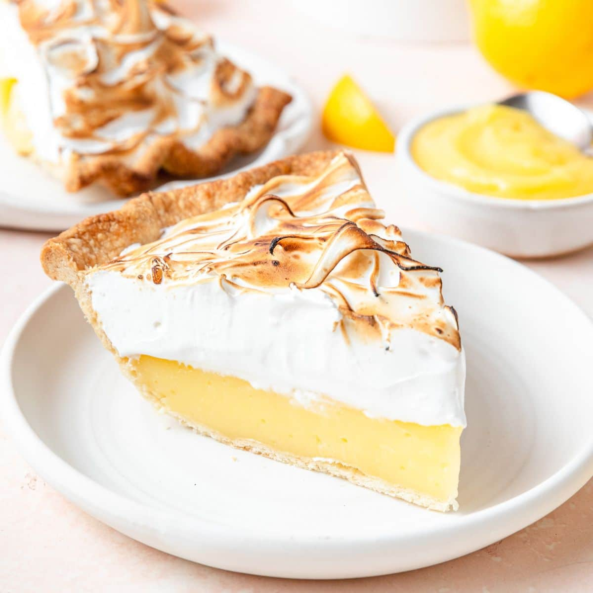
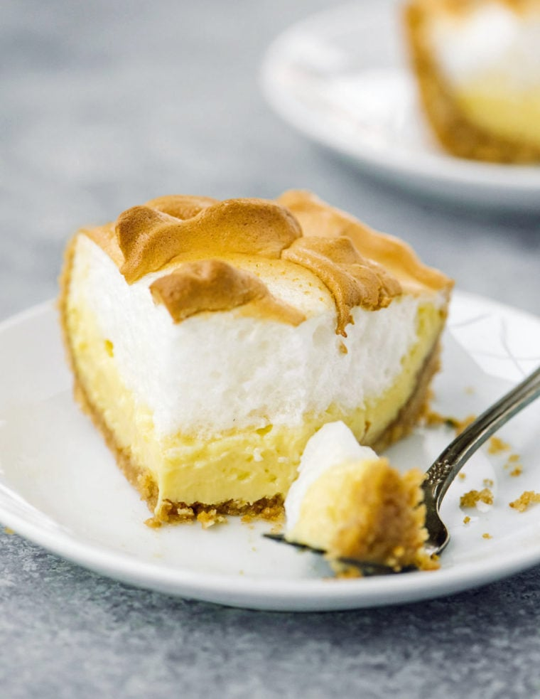

Tangy lemon curd, hand-rolled crust, and meringue toasted to a perfect golden brown. The recipe that built our bakery.
Get the Recipe →
INGREDIENT SPOTLIGHT
We juice and zest fresh lemons every morning. No shortcuts, no artificial flavoring. Just the bright, tangy filling that makes this pie a family favorite.

HEIRLOOM TECHNIQUE
Every crust is rolled, folded, and crimped by hand using a recipe that has stayed in our family for generations. The meringue is whipped to stiff, glossy peaks and toasted until golden brown.
Open Tuesday through Saturday, 8am–6pm.